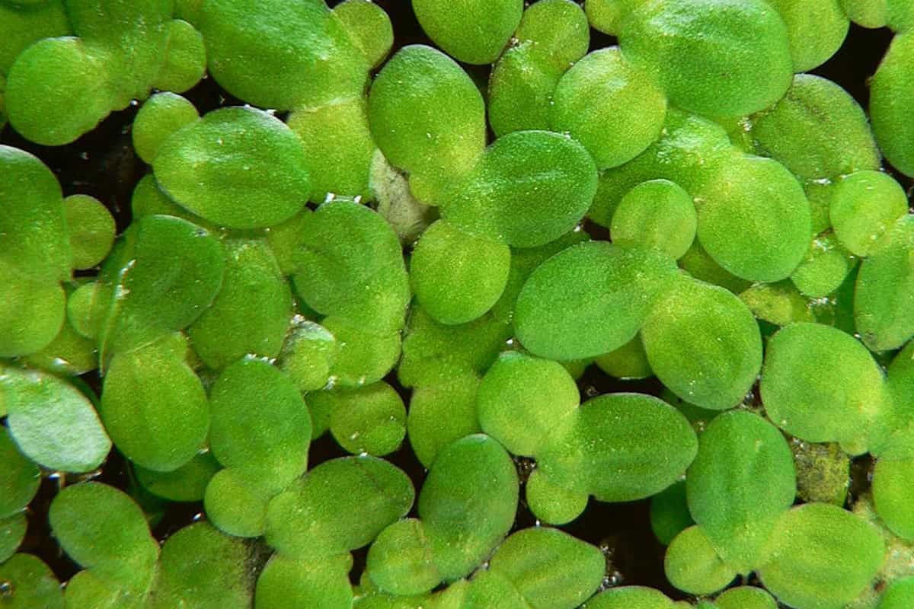

How to Keep Your Catfish Pond Clean and Productive
By Alawusa Heritage Fish & Farms
INTRODUCTION
A clean and well-managed pond is the foundation of a successful catfish farm. Whether you're farming for household use,
selling to local vendors,
or supplying restaurants, pond hygiene and water quality directly affect fish health, size, taste, and profitability.
1. Regular Water Quality Management
Clean water = healthy catfish. Your fish live, breathe, and feed in water — so if it’s dirty or stagnant, they suffer.
Key Things To Monitor:
Dissolved oxygen (DO): Should be at least 5 mg/L. Low DO causes stress and stunts growth.
pH level: Ideal range is 6.5 to 8.5
Ammonia and nitrite levels: Build-up of fish waste or uneaten feed increases ammonia, which is toxic.
What To Do:
Partial water changes (20–30%) weekly.
Use aerators or splash pipes to increase oxygen.
Avoid overstocking your pond with too many fish
2. Control Feeding To Avoid Waste
Overfeeding is one of the top causes of dirty water.
Best Practices:
Feed catfish twice daily with floating or sinking feed, depending on age.
Watch how they respond: If they stop eating, stop feeding.
Feed early morning and late afternoon for best growth performance.
Why It Matters:
Leftover feed decays in the pond, releasing harmful toxins like ammonia and depleting oxygen.
3. Remove Organic Waste And Debris
Just like sweeping your room, your pond needs routine cleanup.
Do This:
Use a pond net or rake to remove leaves, dead fish, an leftover feed.
Install a sloped concrete base or drainage system if your pond is concrete.
Use bottom drains or siphons for earthen ponds to remove sludge from the base.
4. Natural Filtration and Plants
Water plants can help filter the pond and absorb excess nutrients.
Helpful plants:
Water hyacinth: Helps absorb nitrates but can grow too fast — manage it.
Duckweed: Small, fast-growing, and nutritious (bonus: some fish eat it).

Floating bamboo rafts can help control algae and provide shade.
These also reduce the sunlight penetration that causes algal blooms and excess heat.
5. Protect Your Pond from Contamination
Keep out pollutants and harmful runoff that can poison your fish.
Prevent ☒:
Runoff from nearby farms (fertilizer, herbicides).
Bathing or washing in the pond.
Pouring chemicals or soaps into surrounding land.
Tips:
Fence your pond or build a boundary wall to keep people, animals, and pollutants out.
6. Conduct Monthly Pond Checks
Your checklist ✔:
Count fish or estimate population (check for mortality).
Measure water depth and temperature.
Check for signs of disease: skin lesions, sluggish swimming, refusal to eat.
Take note of smell — bad odors = waste build-up.
Bonus Tip: Use Probiotics for Water Treatment
Some farmers now use
aquaculture probiotics
— safe, beneficial bacteria — to break down organic waste and maintain a healthy pond ecosystem.
These help reduce:
Ammonia
Hydrogen sulfide
Sludge accumulation
You can find them at aquaculture supply stores in Nigeria.
Final Thoughts
At Alawusa Heritage Fish & Farms,
we've learned over the years that pond management is not just science —
it’s consistency, care, and respect for nature.
A clean pond means:
Healthy, fast-growing catfish
Lower mortality
Better taste and appearance
More trust from your customers and community
"You don't grow fish with feed alone — you grow fish with water."
— An old farm saying we live by at Alawusa Heritage.